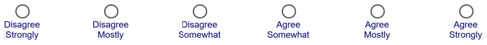
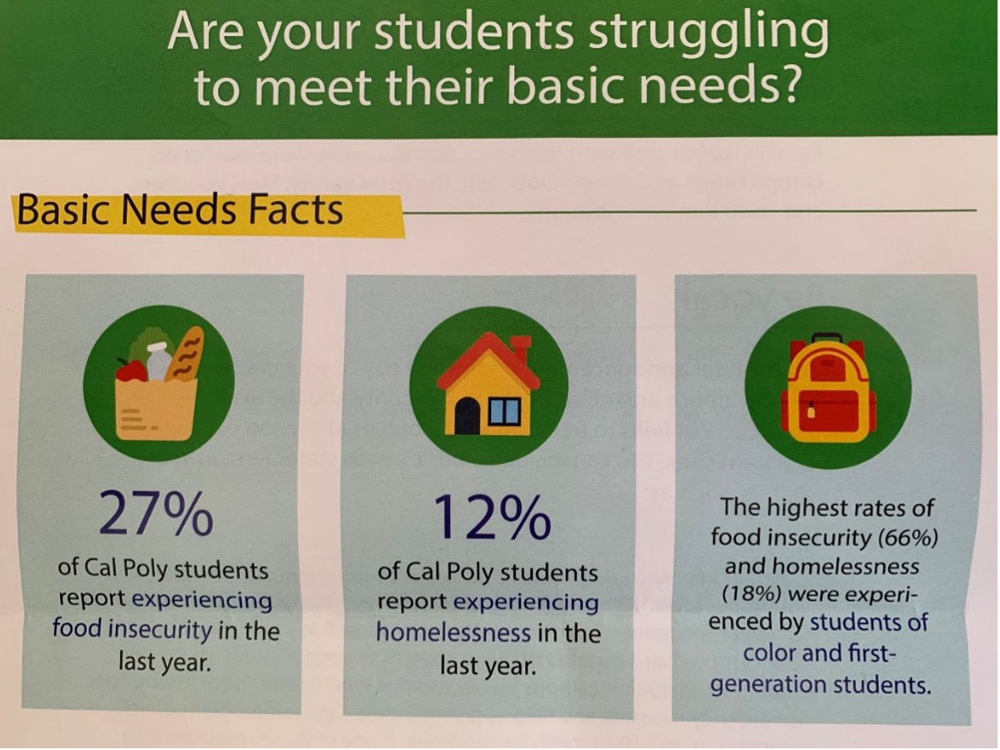

Activity 11: Questionnaire Writing
Cal Poly Basic Needs Report – Part I
Submit via Gradescope, don’t forget to assign pages to the questions in the outline!
Delete any extraneous instructions (like this box) before submission. You will be deducted points from now on if you do not follow this instruction!
You do not need to do any R coding for this activity, I would recommend that you use the Word template.
But you are welcome to use the quarto template as always! 11.1-activity-questions-i.qmd
- NOTE however that you will need to refer to the instructions for photos and some links!
Observation Errors
Q1
Discuss any possible sources of observation errors for the following scenario.
The question “How would you describe your current health? Excellent, Good, Fair, or Poor” appeared in an interviewer-administered survey and self-administered survey. The interviewer-administered survey consistently produced lower proportions of respondents who choose “excellent”.
Q2
A researcher created a reverse-keyed version of the California F-scale (a measure of authoritarianism) where all the items were the opposite in meaning. Example:
Original:
Obedience and respect for authority are the most important virtues children should learn.

New question:
Obedience and respect for authority are the least important virtues children should learn.
They administered both the original and reverse-keyed versions of the California F-scale to the same group of respondents. They treated “agree strongly” as a 6 and “disagree strongly” as a 1 numerically in the analysis for both scales.
The correlation between these two scales was high and positive. Why do you think this happened? Explain.
Cal Poly Basic Needs Report - Writing Questions
San Luis Obispo is a notably expensive (to the point of unafordable) place to live. An important part of our learning and living community is that students come from varying backgrounds in many different ways. Students (and faculty and staff!) are impacted by the costs of living in SLO in different ways.
A large study was completed at the beginning of 2018 into student needs. Later in 2018, a bill passed by the California Senate supported the CSU Basic Needs Initiative to fund programs to support some of those needs.
This pamphlet was distributed in Fall 2019 to faculty:

Q3 – Research Question
What do you think was the objective behind constructing and administering the survey that led to these results? Write a clear research question (or two) that you guess this survey was trying to answer.
Q4 – Measurable Constructs
What are some of the constructs/topics that you think the survey that led to these results was measuring?
Q5 – Define Constructs Yourself
How would you define each of the constructs/topics you reported in the previous question?
Q6 – CSU Initiative Concept Definitions
How does the CSU Basic Needs Initiative define Basic Needs, Food Insecurity, and Housing Insecurity? Copy and paste their definitions from the website here for your reference.
Q7 – Survey Method
Explain why it makes sense in this case to administer the survey online.
Q8 – Sample Frame & Distribution
The Study of Student Basic Needs report from 2018 described their sample as:
A survey was distributed to a census sample across 23 CSU campuses…
If you were to complete this study:
- What would you use as the sampling frame?
- How would you distribute the survey?
- Would you incentivize survey completion? If so, what would you use as an incentive?
Find the actual study description in the report. Answer the questions below or note if the report is unclear
- Sampling frame?
- Survey distribution?
- Incentive?
Q9 – Original Study Coverage
What do you make of the sample size (\(n=24,325\)), response rate (5.76%), and completion rate (74.4%)? How would these three numbers impact how you interpret the results? The executive summary notes that “The sample was largely representative of the general student body.”
Q10 – Write Questions
The study included all CSU campuses, but we do have the data for Cal Poly alone. Here are some of the results for Cal Poly in 2018:
- 27% of Cal Poly students experienced food insecurity in 2017
- 12% of Cal Poly students experienced housing insecurity in 2017
- Cal Poly students who experienced food and housing insecurity reported worse physical health, mental health, and lower GPAs than students who do not.
- The highest rates of food insecurity (66%) and housing insecurity (18%) were experienced by students of color and first-generation students.
Based on the definitions that the CSU gave (Q6) and the results above, what questions do you think were asked in the survey that led to these results?
Write at least 4 questions measuring food insecurity and at least 4 questions measuring housing insecurity. Word the questions carefully following the guidelines that we have learned so far. (Please don’t just find the questionnaire online, it will be better for learning if you try to come up with these yourselves first!)
We have a lot more guidelines to come and more help thinking about different kinds of questions. We will be revising these questions on Thursday based on those guidelines, but if you are curious, you can check out Chapter 5 of Internet, Phone, Mail, and Mixed-Mode Surveys: The Tailored Design Method.
If you or a friend are experiencing food and/or housing insecurity, please know that Cal Poly has resources to help out. Food and housing insecurity impact physical and mental health and lead to academic hardships.
Campus has a number of free resources to support students in these situations, including campus meals, campus food pantry, food distributions, emergency housing, and help applying for the CalFresh program, which provides up to $298/month for an individual for groceries (including the farmers market!). The housing resources are not as robust, so please reach out if you need help navigating them.
If these resources may help you or a friend, please reach out to me or see a detailed list of on-campus resources at https://basicneeds.calpoly.edu/. 🌼